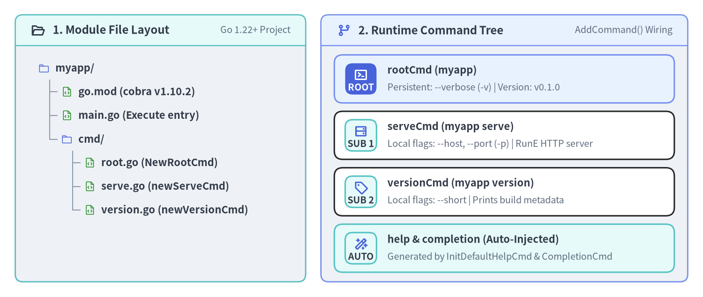
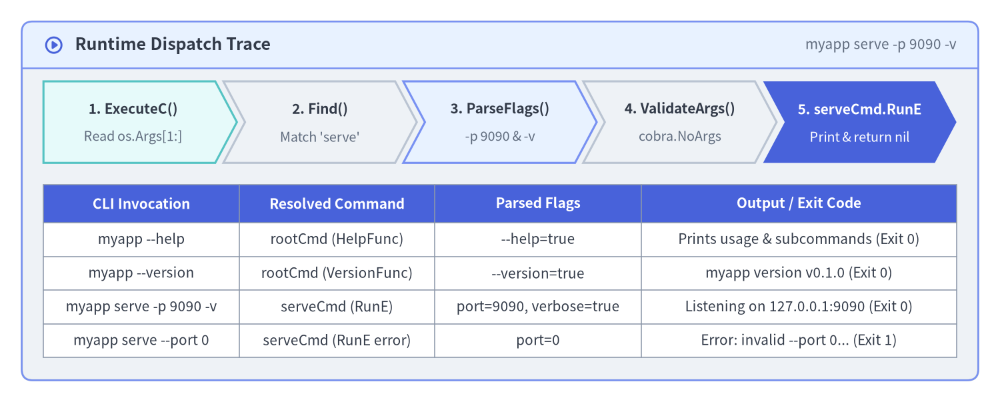

Quickstart & First Subcommand Tree
This quickstart walks you step-by-step from an empty directory to a working multi-command Go CLI (myapp) powered by github.com/spf13/cobra v1.10.2. You will initialize a module, construct a root command (rootCmd), wire two subcommands (versionCmd and serveCmd) with AddCommand(), configure error-returning RunE handlers, and inspect the built-in --help and --version capabilities.

Source Code
from drawlib.canvas import save, setup
from drawlib.icons import phosphor
from drawlib.preset_colors import CssColors
from drawlib.smartarts import CardList, Panel, TreeNode
from drawlib.styles import Colors, Styles
setup(width=184, height=78, dpi=150)
left_panel = Panel(
"1. Module File Layout",
"Go 1.22+ Project",
style=Styles.Neutral.patch(shape_r=2.0),
header_style=Styles.SecondaryNeutral.patch(shape_line_width=1.2),
text_style=Styles.DarkBold.patch(text_size=11.5),
description_style=Styles.Muted.patch(text_size=9.5),
icon=phosphor.folder_open,
icon_style=Styles.DarkBold,
header_variant="filled",
header_height=8.0,
)
left_panel.draw((4.0, 4.0), width=76.0, height=70.0)
TreeNode.register_drawing_item(
name="qs_dir",
location="before",
padding_width=4.5,
function=phosphor.folder,
style=Styles.Primary.patch(icon_color=Colors.Primary),
args={"width": 3.0},
)
TreeNode.register_drawing_item(
name="qs_go",
location="before",
padding_width=4.5,
function=phosphor.file_code,
style=Styles.Primary.patch(icon_color=CssColors.ForestGreen),
args={"width": 3.0},
)
tree = TreeNode(
"myapp/",
text_style=Styles.DarkBold.patch(text_size=10.5),
line_style=Styles.Muted.patch(line_width=1.0),
line_horizontal_margin=3.0,
line_horizontal_length=3.0,
line_vertical_margin=6.2,
children=[
TreeNode("go.mod (cobra v1.10.2)").set_drawing_item("qs_go"),
TreeNode("main.go (Execute entry)").set_drawing_item("qs_go"),
TreeNode(
"cmd/",
children=[
TreeNode("root.go (NewRootCmd)").set_drawing_item("qs_go"),
TreeNode("serve.go (newServeCmd)").set_drawing_item("qs_go"),
TreeNode("version.go (newVersionCmd)").set_drawing_item("qs_go"),
],
).set_drawing_item("qs_dir"),
],
).set_drawing_item("qs_dir")
tree.draw(xy=(10.0, 60.0))
right_panel = Panel(
"2. Runtime Command Tree",
"AddCommand() Wiring",
style=Styles.Neutral.patch(shape_r=2.0),
header_style=Styles.PrimaryNeutral.patch(shape_line_width=1.2),
text_style=Styles.DarkBold.patch(text_size=11.5),
description_style=Styles.Muted.patch(text_size=9.5),
icon=phosphor.git_branch,
icon_style=Styles.PrimaryBold,
header_variant="filled",
header_height=8.0,
)
right_panel.draw((84.0, 4.0), width=96.0, height=70.0)
r_xy, r_w, r_h = right_panel.get_content_box((84.0, 4.0), width=96.0, height=70.0, padding=(3.5, 2.5))
cmds = CardList(
style=Styles.White,
text_style=Styles.DarkBold.patch(text_size=10.5),
description_style=Styles.Muted.patch(text_size=9.5),
badge_shape="rounded_rect",
badge_style=Styles.SecondaryNeutral,
badge_text_style=Styles.DarkBold.patch(text_size=9.5),
icon_style=Styles.PrimaryBold,
direction="vertical",
spacing=2.2,
)
cmds.add(
"rootCmd (myapp)",
"Persistent: --verbose (-v) | Version: v0.1.0",
badge_text="ROOT",
icon=phosphor.terminal_window,
style=Styles.PrimaryNeutral,
badge_style=Styles.PrimaryFlat,
badge_text_style=Styles.WhiteBold.patch(text_size=9.5),
icon_style=Styles.WhiteBold,
)
cmds.add(
"serveCmd (myapp serve)",
"Local flags: --host, --port (-p) | RunE HTTP server",
badge_text="SUB 1",
icon=phosphor.hard_drives,
)
cmds.add(
"versionCmd (myapp version)",
"Local flags: --short | Prints build metadata",
badge_text="SUB 2",
icon=phosphor.tag,
)
cmds.add(
"help & completion (Auto-Injected)",
"Generated by InitDefaultHelpCmd & CompletionCmd",
badge_text="AUTO",
icon=phosphor.magic_wand,
style=Styles.SecondaryNeutral,
)
cmds.draw(r_xy, width=r_w, height=r_h)
save()
1. Initialize the Go Module & Install Cobra v1.10.2
Create a new directory, initialize your Go module, and add github.com/spf13/cobra@v1.10.2:
mkdir -p myapp/cmd && cd myapp
go mod init example.com/myapp
go get github.com/spf13/cobra@v1.10.2
This adds github.com/spf13/cobra v1.10.2 along with its two lightweight direct dependencies (github.com/spf13/pflag v1.0.9 and github.com/inconshreveable/mousetrap v1.1.0 for Windows Explorer launch detection) to go.mod.
Note — Why We Write Constructors Instead of Running
cobra-cli init: The legacycobra-cligenerator scaffolds package-level global variables (var rootCmd = &cobra.Command{...}) wired insidefunc init(). As detailed in Chapter 2: Factory Pattern, Options & DI, constructors (NewRootCmd()) are just as concise to write by hand and make your CLI 100% safe for parallel unit testing from day one.
2. Create the Root Command (cmd/root.go)
Create cmd/root.go with a NewRootCmd() constructor that defines the root command, sets Version, registers a persistent --verbose flag, and attaches newVersionCmd() and newServeCmd():
package cmd
import (
"github.com/spf13/cobra"
)
// RootOptions holds flags shared across the root command and all subcommands.
type RootOptions struct {
Verbose bool
}
// NewRootCmd constructs the root Command and wires its subcommand tree.
func NewRootCmd() *cobra.Command {
opts := &RootOptions{}
rootCmd := &cobra.Command{
Use: "myapp",
Short: "High-performance cloud workload manager",
Long: "myapp manages local and remote microservice deployments with Cobra v1.10.2.",
Version: "v0.1.0",
SilenceUsage: true, // Do not print usage on runtime RunE errors
SilenceErrors: true, // Let main.go handle error printing once
}
// Persistent flags are inherited by all subcommands (serve, version, etc.)
rootCmd.PersistentFlags().BoolVarP(
&opts.Verbose,
"verbose",
"v",
false,
"Enable verbose diagnostic logging",
)
// Wire child subcommands into the tree
rootCmd.AddCommand(
newVersionCmd(),
newServeCmd(opts),
)
return rootCmd
}
Automatic --version Behavior & Shorthand Collision Handling
When rootCmd.Version is non-empty ("v0.1.0"), InitDefaultVersionFlag() automatically registers a --version boolean flag during Execute():
- If
-vis not already taken on the root command, Cobra registers-vas the shorthand for--version. - Because our
rootCmdabove explicitly claimed-vfor--verbose, Cobra detectsc.Flags().ShorthandLookup("v") != niland registers--versionwithout a-vshorthand—preventing a panic! - You can customize the output format via
rootCmd.SetVersionTemplate("{{.Name}} release {{.Version}}\n").
3. Add Subcommands (cmd/version.go and cmd/serve.go)
3.1 cmd/version.go — Subcommand with Local --short Flag
package cmd
import (
"runtime"
"github.com/spf13/cobra"
)
func newVersionCmd() *cobra.Command {
var short bool
cmd := &cobra.Command{
Use: "version",
Short: "Print the version and Go runtime information",
Args: cobra.NoArgs, // Reject any unexpected positional arguments
RunE: func(cmd *cobra.Command, args []string) error {
if short {
cmd.Println("v0.1.0")
return nil
}
cmd.Printf("myapp version v0.1.0 (%s/%s, %s)\n",
runtime.GOOS, runtime.GOARCH, runtime.Version())
return nil
},
}
cmd.Flags().BoolVar(&short, "short", false, "Print only the version number")
return cmd
}
3.2 cmd/serve.go — Subcommand with RunE Validation & Parent Options
Always prefer RunE func(cmd *cobra.Command, args []string) error over Run so errors propagate cleanly back to Execute() instead of calling os.Exit(1) deep inside command logic:
package cmd
import (
"fmt"
"github.com/spf13/cobra"
)
func newServeCmd(rootOpts *RootOptions) *cobra.Command {
var (
host string
port int
)
cmd := &cobra.Command{
Use: "serve",
Aliases: []string{"server", "start"},
Short: "Start the HTTP control plane server",
Example: " myapp serve --port 9090 --verbose",
Args: cobra.NoArgs,
RunE: func(cmd *cobra.Command, args []string) error {
if port < 1 || port > 65535 {
return fmt.Errorf("invalid --port %d: must be between 1 and 65535", port)
}
if rootOpts.Verbose {
cmd.Printf("[DEBUG] verbose logging enabled\n")
}
cmd.Printf("Listening on http://%s:%d\n", host, port)
return nil
},
}
// Local flags apply only to "myapp serve"
cmd.Flags().StringVar(&host, "host", "127.0.0.1", "Bind address for the HTTP listener")
cmd.Flags().IntVarP(&port, "port", "p", 8080, "TCP port for the HTTP listener")
return cmd
}
4. Wire the Entrypoint (main.go) & Run the CLI
Keep main.go minimal—its only responsibility is constructing the root command, executing it, and exiting with a non-zero code on error:
package main
import (
"fmt"
"os"
"example.com/myapp/cmd"
)
func main() {
rootCmd := cmd.NewRootCmd()
if err := rootCmd.Execute(); err != nil {
fmt.Fprintf(os.Stderr, "Error: %v\n", err)
os.Exit(1)
}
}

Source Code
from drawlib.canvas import save, setup
from drawlib.icons import phosphor
from drawlib.smartarts import ChevronProcess, Panel, Table
from drawlib.styles import Colors, Styles
setup(width=184, height=74, dpi=150)
outer = Panel(
"Runtime Dispatch Trace",
"myapp serve -p 9090 -v",
style=Styles.Neutral.patch(shape_r=2.0),
header_style=Styles.PrimaryNeutral.patch(shape_line_width=1.2),
text_style=Styles.DarkBold.patch(text_size=12.0),
description_style=Styles.Muted.patch(text_size=10.0),
icon=phosphor.play_circle,
icon_style=Styles.PrimaryBold,
header_variant="filled",
header_height=8.5,
)
outer.draw((4.0, 4.0), width=176.0, height=66.0)
proc = ChevronProcess(
style=Styles.White,
text_style=Styles.DarkBold.patch(text_size=10.0),
description_style=Styles.Muted.patch(text_size=9.5),
corner_angle=62.0,
spacing=1.5,
flat_left_end=True,
)
proc.add("1. ExecuteC()", description="Read os.Args[1:]", style=Styles.SecondaryNeutral)
proc.add("2. Find()", description="Match 'serve'", style=Styles.Neutral)
proc.add("3. ParseFlags()", description="-p 9090 & -v", style=Styles.PrimaryNeutral)
proc.add("4. ValidateArgs()", description="cobra.NoArgs", style=Styles.Neutral)
proc.add(
"5. serveCmd.RunE",
description="Print & return nil",
style=Styles.PrimaryFlat,
text_style=Styles.WhiteBold.patch(text_size=10.0),
description_style=Styles.White.patch(text_size=9.5),
)
proc.draw(xy=(8.0, 44.0), width=168.0, height=15.0)
tbl = Table(
cell_style=Styles.White,
text_style=Styles.Dark.patch(text_size=10.0),
header_cell_style=Styles.PrimaryFlat,
header_text_style=Styles.WhiteBold.patch(text_size=10.0),
border_style=Styles.MutedThin,
)
tbl.set_style_cell_evenodd(
even_color=Colors.Light,
even_text_style=Styles.Dark.patch(text_size=10.0),
odd_color=Colors.White,
odd_text_style=Styles.Dark.patch(text_size=10.0),
)
tbl.set_style_cell_header(
background_color=Styles.PrimaryFlat.shape_fill_color,
text_style=Styles.WhiteBold.patch(text_size=10.0),
)
rows = [
["CLI Invocation", "Resolved Command", "Parsed Flags", "Output / Exit Code"],
["myapp --help", "rootCmd (HelpFunc)", "--help=true", "Prints usage & subcommands (Exit 0)"],
["myapp --version", "rootCmd (VersionFunc)", "--version=true", "myapp version v0.1.0 (Exit 0)"],
["myapp serve -p 9090 -v", "serveCmd (RunE)", "port=9090, verbose=true", "Listening on 127.0.0.1:9090 (Exit 0)"],
["myapp serve --port 0", "serveCmd (RunE error)", "port=0", "Error: invalid --port 0... (Exit 1)"],
]
tbl.draw_flexible(
xy=(8.0, 40.0),
column_widths=[36.0, 36.0, 38.0, 58.0],
row_heights=[7.0, 6.2, 6.2, 6.2, 6.2],
data=rows,
align="top_left",
)
save()
Verify Your CLI in the Terminal
Run the following commands to see Cobra's auto-generated help, subcommand routing, persistent flag inheritance, and error handling in action:
# 1. Inspect auto-generated root help (includes "serve", "version", "help", and "completion")
$ go run . --help
myapp manages local and remote microservice deployments with Cobra v1.10.2.
Usage:
myapp [command]
Available Commands:
completion Generate the autocompletion script for the specified shell
help Help about any command
serve Start the HTTP control plane server
version Print the version and Go runtime information
Flags:
-h, --help help for myapp
-v, --verbose Enable verbose diagnostic logging
--version version for myapp
Use "myapp [command] --help" for more information about a command.
# 2. Execute "serve" with both local (-p) and inherited persistent (-v) flags
$ go run . serve -p 9090 -v
[DEBUG] verbose logging enabled
Listening on http://127.0.0.1:9090
# 3. Verify clean error reporting without noisy usage dumps (SilenceUsage: true)
$ go run . serve --port 70000
Error: invalid --port 70000: must be between 1 and 65535
Important — Always Use
cmd.Print*Instead offmt.Print*: Notice that ourRunEhandlers callcmd.Printf(...)andcmd.Println(...)rather thanfmt.Printf(...). Cobra routescmd.Print*throughcmd.OutOrStdout(), allowing unit tests to capture output in memory viacmd.SetOut(buf)!
Next Steps
Now that you have a working command tree, proceed to Chapter 2: Factory Pattern, Options & DI to learn how to structure complex command options (Complete() -> Validate() -> Run()) and inject dependencies cleanly.